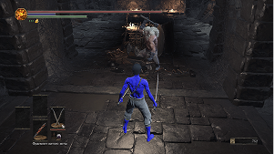

Сон для слабых -
ㅤㅤㅤㅤㅤпобеда для сильных!
Сон для слабых -
ㅤㅤㅤㅤㅤпобеда для сильных!
Как начать играть в Dark Souls 3
Запустить игру проще простого: два раза щелкните по иконке (надеюсь, вы догадались, что игру нужно сначала скачать). Далее выбираем "Новая игра" и приступаем к созданию персонажа.
Создание персонажа Наш хардкорный ветеран рекомендует выбирать класс наемника.
Вооруженный парными скимитарами, этот герой способен пройти всю игру с легкостью, ведь это просто имба! Щиты? Оставьте их казуалам. Магия? Только для романтиков. Перекаты — вот истинный путь настоящего воина!
Не забываем настроить внешность персонажа который будет траить боссов до посинения, должно получиться что-то такое. Идеально!

Управление для чайников
ㅤW — Идти вперед (медленно, осторожно, словно на минном поле).
ㅤS — Идти назад (еще медленнее, ведь сзади тоже могут убить).
ㅤD/A — Идти вправо/влево (только если уверены, что там нет боссов).
ㅤПробел — Перекат (главный трюк в арсенале любого уважающего себя игрока).
ㅤДва пробела — Прыжок в сторону (идеален для бегства от надвигающейся гибели).
ㅤЗажатый пробел — Бег (поможет, если вы хотите умереть быстрее).
ㅤR — Использовать предмет быстрого доступа (ну, вдруг пригодится).
ㅤЛКМ — Атакуйте оружием в правой руке (вдруг повезет).
ㅤПКМ — Атакуйте оружием в левой руке (это вообще зачем?).
ㅤКолесико вниз — Сменить предмет быстрого действия (если предыдущий не сработал).
ㅤКолесико нажать — Автонаведение на врага (прощайтесь с нервами).
ㅤCtrl — Спецатака оружия (когда обычные удары уже не помогают).
характеристики
В игре много характеристик, но наш гуру andrewgera228 расскажет только о нужных:
ㅤHP (Здоровье)Здоровье нужно, чтобы враг не убил вас с первого удара. Ну, почти с первого...
ㅤСтамина (Выносливость)Нужна, чтобы ваш персонаж не задыхался, как астматик, и мог продолжать сражаться. Особенно полезно, когда перекаты уже не спасают.
ㅤЛовкостьЧем выше ловкость, тем сильнее ударяет ваш любимый скимитар. А чем сильнее удар, тем меньше шансов, что враг сможет нанести вам второй удар.
Что еще важно знать
Качать уровень у женщины (потому что иначе она обидится и перестанет качать).
Покупать предметы у старушки за честно заработанные души (она, кстати, тоже не всегда честная).

Прокачивать оружие у кузнеца Андрюхи (кстати, он тоже иногда прокидывает).
Менять души боссов на оружие у кучки костей (ну, хоть кто-то в этом мире честный).
Перемещаться по кострам, потому что возвращаться к началу уровня — это просто невыносимо.

В этой игре вы будете много умирать. Много страдать. И даже немного веселиться (особенно когда враг падает в пропасть сам). Но помните: если вы не верите в Бога, эта игра заставит вас поверить. Мы русские, с нами Бог... и скимитары.
Если вы ничего не поняли — не переживайте, мы всегда готовы помочь. Удачи в вашем путешествии!